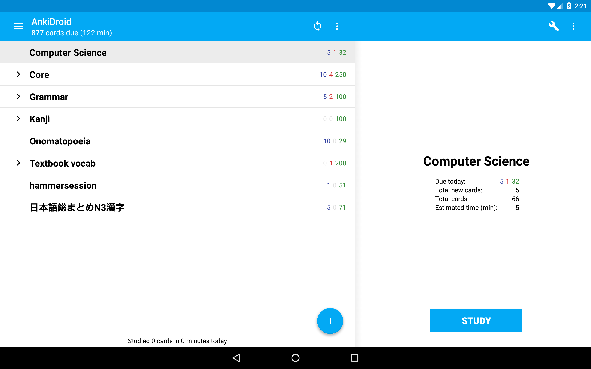

AnkiDroid: Remember Forever
Our free flashcard app learns how you learn, so you only review what you need, when you need it
4.8 ★
rating
10,000,000+
downloads
130,000+
reviews

Official Anki for Android
Windows/macOS/Linux/iOS
Already
downloaded?
Learn how to get the most out of AnkiDroid →

Meet AnkiDroid.
Uncompromising efficiency.
An estimated 70% of US medical students use Anki1. Whether you want to rank 1st at Cambridge2, win over $200,000 breaking quiz show records3, make a few video games4 or just ace your French test, you're in good company.
Learn more about what makes Anki so effectiveUnlimited flexibility.
From radiology to calligraphy, chess games to geography: if it has a question and answer then it can be an Anki card.
For advanced users, our note-based templates mean one change can instantly generate or update related cards, and our HTML, CSS & JS support enables any functionality you desire.
Images
Drawings
Audio
Video
Text to speech
Speech to text
Equations
Type the answer
Cloze
Handwriting
Build your own!
Save time.
With AnkiDroid, you can review cards created using Anki Desktop's vast library of addons, or create cards instantly from a web browser or spreadsheet (CSV). Over 10,000 decks are also available to download for free, and AnkiDroid uniquely supports direct data input from other apps.Sync up.
AnkiDroid can optionally sync with AnkiWeb, giving you a free online backup of your cards, media, settings and review history. All major platforms have Anki clients which sync with AnkiWeb, so if you ever want to switch from a Chromebook to a Steam Deck, we've got you covered. The AnkiWeb site supports basic reviewing for places where you can't install apps.Here to stay.
AnkiDroid has been around for over 15 years, with over 2,000 people contributing code and translations from all over the world. Our code is public, our past releases are available, and your data is yours to export and use as you please.We're on your side.
AnkiDroid is open source and developed by a team of volunteers. Free means free. We have no financial interest in your data, no desire to lock you in to our app, and no reason to waste your time. All we want is for you to learn in the most effective way possible.Download now
4.8 ★
rating
10,000,000+
downloads
130,000+
reviews
Official Anki for Android
Windows/macOS/Linux/iOS